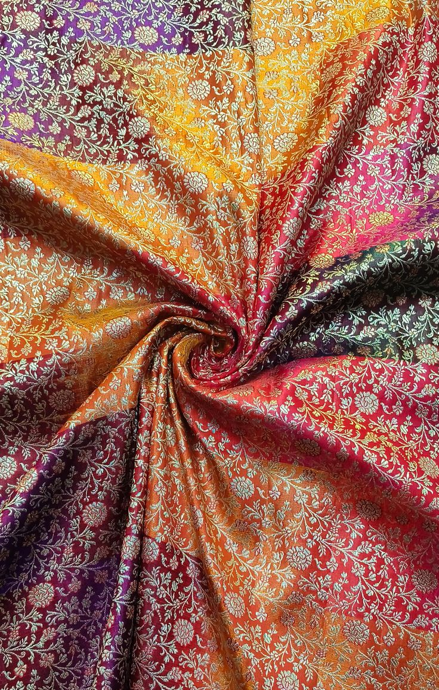
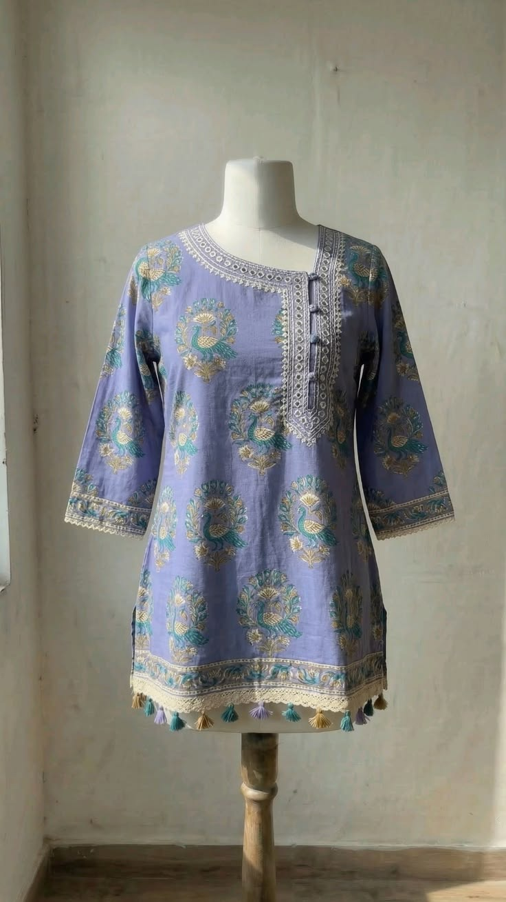
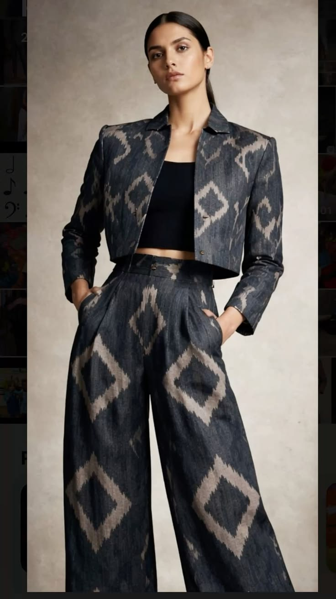
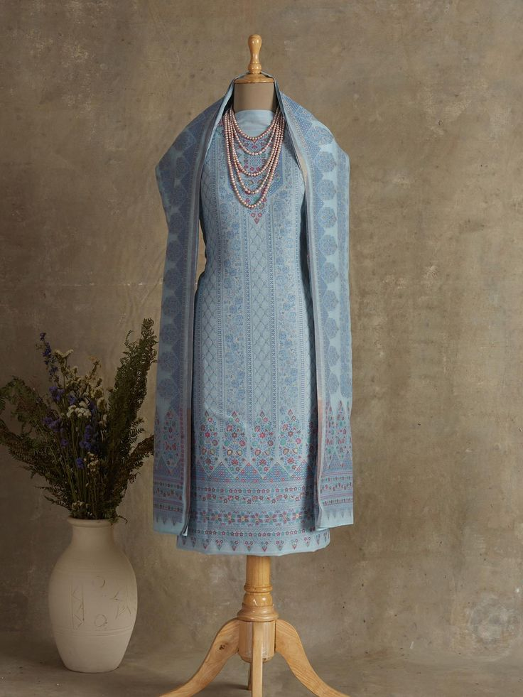

Your idea is reviewed like a studio brief before stitching starts.
Live preview
See it, choose it, customize it.
Custom outfits made to order
Design it. Measure it. Stitch it.
Upload your idea, choose fabric, customize details, add measurements, and get it stitched to your size.
From ₹1,999
Tailor measurements
Assistant guidance
Fabric confirmed before stitching
Fit notes saved
WhatsApp consultant support
Pick by mood, occasion, drape, comfort, and final finish.
Every order keeps fit notes, body notes, and alteration preference.
Dream fit upload
Upload your dream fit.
Have a Pinterest look, screenshot, boutique photo, or outfit idea? Start with your reference and we will help turn it into a stitched custom fit.
Share your reference
Choose a photo from your gallery or paste a Pinterest / website link.
After adding your idea, the design studio will open automatically.
Start here
Choose the easiest way to begin.
Whether you already have a photo, want to browse outfits, or need help choosing fabric, the next step is simple.
01
I have a reference photo
Upload your idea and tell us what you want changed.
02 I want to browse designsPick a look from the collection and customize it.
03 I want fabric firstChoose a fabric mood, then build the outfit around it.
04 I need help decidingAsk the assistant about style, budget, sizing, or delivery.
Select a look, bring a reference, or start from a blank custom fit.
Fabric, color, details, quote, and measurements are checked before work starts.
WhatsApp consultant support and alteration notes keep the order clear.
How it works
From your idea to a stitched outfit.
Every order follows clear checkpoints, so you always know what is being confirmed before stitching starts.



Design, fabric, price range, reference photo, and contact details are captured.
Neckline, sleeves, length, lace, buttons, lining, and fit preference are locked.
Tailor measurements and comfort notes are reviewed before cutting starts.
Final quote, delivery date, fitting notes, and alteration support stay attached to the order.
Start from a collection outfit, fabric, or your own reference.
Choose fabric, style changes, size notes, and deadline.
Get clarity before stitching starts.
Keep order notes and support in one place.
Must-have wardrobe
Choose the garment you want made.
Quick categories help customers start with the right outfit type before they move into fabric, design, sizing, and ordering.
Collections
Pick a look to customize
Customer reviews
Customer words that build trust.
Simple name-based reviews sit near the collections now, so visitors see trust before they scroll into the full order story.
Your order journey
Everything needed for a confident custom fit.
From idea to fabric to measurement, each step is visible so you know exactly what will be stitched.
Start with a photo, collection look, fabric sample, or a fresh outfit request.
Select fabric by comfort, drape, occasion, and final look.
Tailor measurements and fit notes are checked before stitching starts.
Return for office wear, festive looks, family functions, and seasonal outfits.
What we specialize in
Made-to-order womenswear with a clear design path.
Customers should immediately understand that this is for custom outfits, reference photos, fabrics, details, and repeat wardrobe orders.
01
Custom daily wear
Kurtis, shirts, trousers, and simple sets made for comfort and repeat use.

02
Traditional suits
Suit sets, dupattas, festive outfits, and family function looks.
03
Semi-formal fits
Office-ready shirts, trousers, co-ords, and premium everyday tailoring.
04
Fabric-led design
Customers can choose fabric first, then build the outfit around texture and occasion.
Why trust us
Custom stitching with a clear process.
Customers should know what happens after they choose a design, how their fit is handled, and how the order moves forward.
Customers can share an idea, ask questions, and get directed to fabrics, design, or measurements.
Chest, waist, hip, shoulder, sleeve, length, and fit notes are captured before stitching.
Collection cards show starting rates, while final quotes depend on fabric and detailing.
Fit notes stay with the order, making follow-up and alteration conversations easier.
Best sellers
Pick the order level.
Simple packages help customers choose faster and help you quote with confidence.
Starter
Daily Wear Custom Fit
From ₹1,999Kurti, shirt, trousers, or simple daily wear with standard custom measurements.
Start OrderPopular
Premium Fabric Fit
From ₹3,999Silk, linen, georgette, or premium fabric styling with fit and finish guidance.
Start OrderOccasion
Wedding / Party Look
From ₹7,999Statement suit, saree blouse, lace, lining, and event-ready detailing.
Start OrderHigh value
Family / Wedding Capsule
From ₹24,999Multiple coordinated outfits, premium fabric, detailing, measurement notes, and delivery planning for one event.
Start OrderOrder process
From idea to stitched outfit.
Choose a collection look or build your own fit from scratch.
Pick fabric, add accessories, and get the quote before stitching starts.
Use the tailor measurement form and keep fit notes ready before stitching.
Your order notes stay saved so fitting, delivery, and changes remain clear.
Quality promise
Every custom outfit needs clear checks.
Garment, fabric, neckline, sleeves, accessories, and reference photo are confirmed before stitching.
Measurements, body notes, margins, and comfort preference are attached to the order.
Starting price becomes final quote after fabric and detail level are selected.
Need-by date, urgency, and alteration support are saved with the order.
Create from scratch
Didn’t find your perfect look?
Start with a blank custom fit, choose the garment type, pick fabric, adjust style, and send measurements for stitching.
Kurti, suit, blouse, dress, shirt, or trousers.
Select fabric, color, neckline, sleeves, fit, and extras.
Save the order details so the studio can prepare sizing and stitching.
Why customers buy
Make the decision feel easy.
Package and budget are captured before follow-up, so the customer knows the starting range.
Customers can continue into sizing, tailor notes, and body measurements after choosing a look.
Customers can ask questions, choose direction, and continue into design or sizing.
Repeat customers
One order should become a wardrobe.
Growth comes from repeat buying. The site now gives customers clear reasons to return after their first fit works.
Shirts, trousers, kurtis, and semi-formal sets for daily use.
Suit sets, brocade blouses, dupattas, and coordinated family looks.
Once sizing is right, repeat orders become faster and easier.
Behind the fit
See how your outfit comes together.
Your inspiration, selected fabric, and design choices are saved together.
Measurements, fabric details, stitching progress, and quality checks stay clear.
Post final look, customer review, and reorder suggestion for the next occasion.
Why choose us
A better way to order custom clothing.
ImaginFit keeps the important parts visible: inspiration, fabric, sizing, details, quote, and support.
Add every good order as a customer story with reference, fabric, measurement result, and review.
Use premium fabrics, accessories, family capsules, and urgent delivery as higher-value options.
Once a customer fit is correct, make the second order faster with saved size and style notes.
Post before, during, and after reels so people see proof, not only product photos.
Questions
Before customers pay.
How does pricing work?
Each collection shows a starting price. Final price depends on fabric, detailing, accessories, and urgency.
How are measurements taken?
Customers can enter tailor measurements in the design studio and keep body notes attached to the order.
Can customers bring Pinterest references?
Yes. References can be saved in the backend and placed on the design preview for discussion.
Assistant
Ask anything before you order.
Share your outfit idea, fabric confusion, occasion, deadline, or sizing question. The assistant will guide you to the right next step.